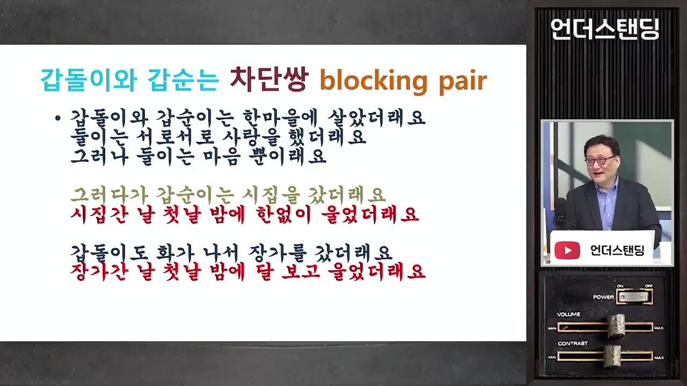
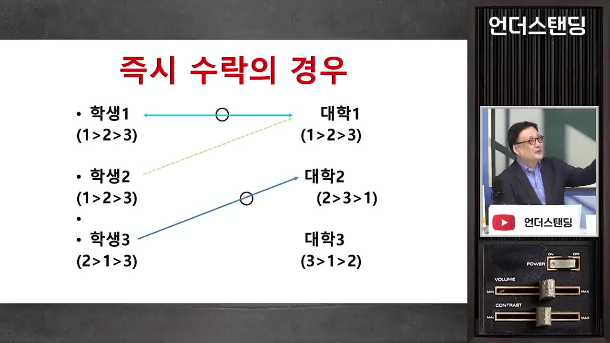
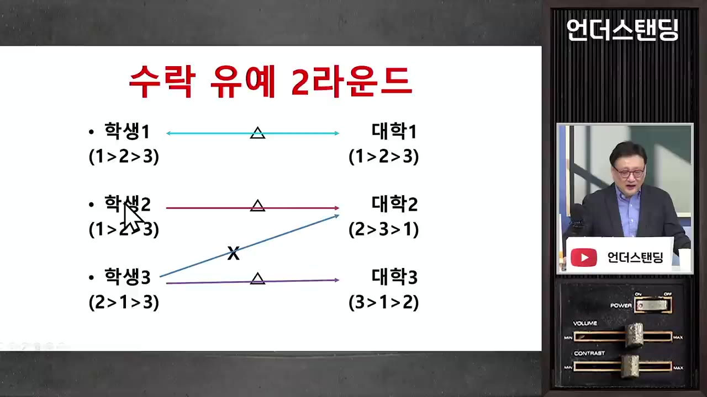
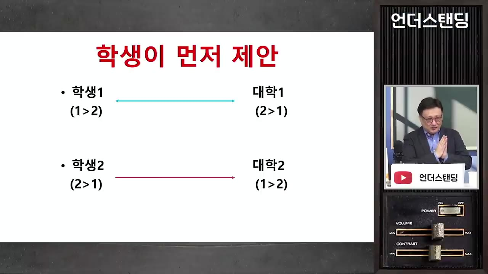
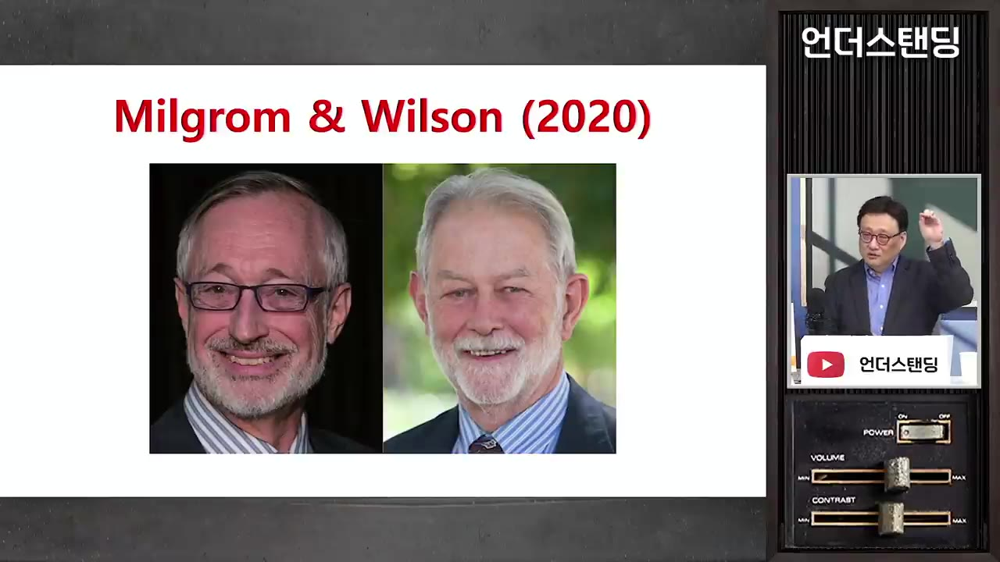
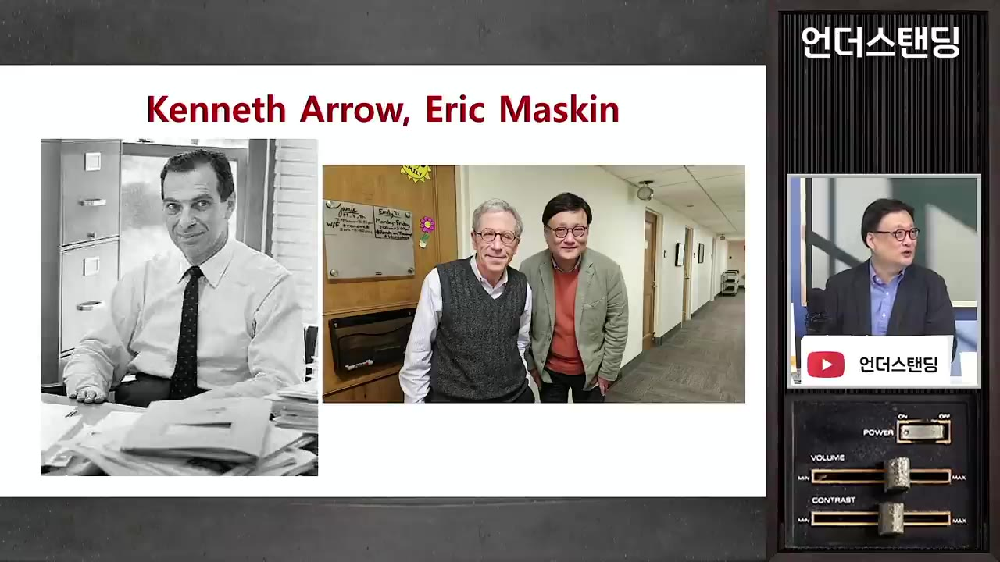

[한순구의 노벨경제학 1부] "쫄아서 눈 낮추면 평생 후회한다" 대학 입시·결혼·이직에서 절대 손해 보지 않는 절대 법칙 (연세대 경제학과 한순구 교수)
▶ 원본 영상 보기한눈에 보기
- 대학 입시·취업·결혼은 가격으로 사고파는 시장이 아니라 양쪽이 서로를 골라야 하는 '매칭 시장'이라, 그냥 두면 반수·이직·이혼 같은 이탈이 생긴다고 한순구 교수는 설명합니다.
- 해법은 노벨상을 받은 게일·섀플리 알고리즘입니다. 원하는 곳을 순서대로 모두 써 내고 '임시 합격'을 반복하면 아무도 이탈할 이유가 없는 '안정적 매칭'이 나옵니다.
- 한국 입시(수시 6회)와 로스쿨(2곳)처럼 지원 횟수를 묶으면 겁먹고 눈을 낮추는 학생이 생기고, 그 결과 평생 후회하거나 반수로 연쇄 피해가 생긴다는 것이 교수의 주장입니다.
- 연세대 마일리지 수강신청과 서울대 장바구니 제도, 여러 물건을 동시에 파는 경매처럼 제도를 잘 설계하면 모두가 납득하는 결과가 나옵니다.
- 개인에게 주는 교훈은 먼저 제안하는 쪽이 유리하니 가장 원하는 곳부터 많이 시도하라는 것입니다.
이런 분께 도움이 됩니다
- 입시·이직·결혼처럼 '고르고 골라지는' 선택을 앞둔 사람: 왜 눈을 낮추면 손해인지 논리로 이해할 수 있습니다.
- 노벨경제학상 이론(매칭·시장 설계·경매·선거 제도)을 쉬운 사례로 알고 싶은 사람에게 맞습니다.
핵심 내용
매칭 시장은 일반 시장과 다르다
- 이 분야로 로이드 섀플리·앨빈 로스 교수가 노벨상을 받았습니다. 두 사람 모두 이공계 출신입니다. 섀플리는 학부에서 수학을, 로스는 공학 박사를 했습니다. (1:57)
- 요즘 경제학에는 '공학적 경제학(engineering side)'이 유행입니다. 물리학이 관찰한다면 공학은 다리를 짓듯이, 경제학도 관찰을 넘어 거래가 잘 일어나도록 제도를 직접 설계하자는 흐름입니다.
- 일반 시장은 돈만 내면 됩니다. 스타벅스는 커피를 팔 때 신분증이나 성적을 묻지 않습니다.
- 매칭 시장은 돈으로 결정되지 않고 양쪽이 서로를 골라야 합니다.
- 대학: 1년에 1억을 내겠다고 해도 성적이 안 되면 떨어지고, 돈이 없어도 장학금을 주며 뽑습니다. 돈으로 뽑으면 평판이 떨어지기 때문에, 대학은 가격보다 품질 관리를 중시합니다.
- 회사: "월급 안 받을 테니 써 주세요"라고 하면 오히려 수상하게 봅니다.
- 결혼: 같은 사람을 두고도 평가가 갈립니다("제 눈의 안경"). 모두가 최고로 꼽는 신랑감은 없습니다.
- 수요·공급 이론은 '물건이 동질적이다'라는 전제가 있어야 성립합니다. 그런데 경제원론은 이 전제를 슬쩍 넘어간다고 교수는 꼬집습니다. (9:26)
- 동질성은 저절로 생기지 않습니다. 진시황은 도량형을 통일했고, 시카고 곡물거래소는 밀을 등급으로 나눴습니다. 그 덕에 뉴욕의 제빵사가 캔자스 농장까지 직접 가지 않고도 밀을 살 수 있게 됐습니다.
- 취업·입학·결혼은 이렇게 등급을 매기기 어려워서 각자도생이 되고, 비효율이 큽니다.
💡 사람과 사람이 서로를 고르는 시장은 가격으로 풀리지 않는다. 누군가 규칙을 설계해야 한다.
극단적인 사례: 신장 이식
- 가족끼리 신장이 안 맞으면, 서로 맞는 두 가족이 신장을 맞바꾸는 '교환 이식'을 할 수 있습니다. (10:13)
- 교환 이식이 어려운 이유:
- 수술 4건을 동시에 해야 합니다. "오늘 당신이 주면 내일 내가 줄게"라는 약속은 믿을 수 없고, 마음을 바꿔도 법으로 강제할 수 없습니다.
- 병원끼리 수술 실적을 두고 경쟁해서 협조하지 않습니다.
- 세 쌍(6명)이 동시에 수술한 적은 있지만, 네 쌍은 미국에서도 한 번도 하지 못했다고 합니다(자막상).
- 신장을 돈으로 사고팔자는 주장도 있습니다. 하지만 사람 몸을 사고팔 수는 없다는 비판을 받는다고 교수는 말합니다.
'갑돌이와 갑순이': 잘못된 매칭이 낳는 이탈(차단 쌍)
- 노래 「갑돌이와 갑순이」가 매칭 실패를 상징한다고 교수는 말합니다. 서로 좋아하면서 고백을 못 해 각자 다른 사람과 결혼하고, 첫날밤에 서로를 생각하며 웁니다. (12:53)

- 결혼 뒤에 서로 마음을 확인하면 야반도주가 생길 수 있습니다. 둘 다 지금 배우자보다 더 좋아하는 상대가 있기 때문입니다. 이런 쌍을 차단 쌍(blocking pair) 이라 부르고, 차단 쌍이 생기면 시스템 전체가 흔들립니다.
- 입시 사례: 연세대 1학년을 전 과목 A로 마친 학생이 자퇴하고 서울대로 갔습니다. (15:09)
- 작년에는 서울대에 한 과만 지원할 수 있어서 1지망 과에 냈다가 떨어지고 연세대로 왔습니다.
- 올해 연세대에 다니며 서울대 2지망 과에 서류만 냈더니 합격했습니다. 작년에 냈어도 붙었을 원서였습니다.
- 피해는 연쇄적입니다. 연세대는 귀한 정원 하나를 잃고, 서울대 그 과는 작년에 덜 원하는 학생을 뽑았습니다. 그 아래 학교에서도 밀려난 학생이 줄줄이 생깁니다. 한 사람의 1년 낭비로 끝나지 않고 수십 명에게 영향이 갑니다.
- 신입사원이 1년 안에 몇십 %씩 나가는 현상도 같은 차단 쌍이라는 언급이 나옵니다.
💡 반수·이직·이혼은 개인의 변덕만이 아니라 처음 매칭이 잘못된 결과다.
먼저 잡아 두려는 유혹: '납치 전형'과 입도선매
- 20년 전 연세대도 꼼수를 쓴 적이 있다고 교수는 말합니다. 고3 5~6월에 서울대에 갈 만한 학생에게 "지금 오면 뽑아 주지만 다른 학교는 못 간다. 지금 안 오면 기회는 없다"는 제안을 했습니다. 교수는 이를 '납치 전형'이라 부릅니다. (18:46)
- 불안한 학생은 이런 제안을 받아들입니다. 더 좋은 곳에 갈 확률이 50:50이라면 지금 100% 보장해 주는 두 번째 자리를 고르는 식입니다.
- 미국에서도 같은 일이 있습니다. 두 번째로 좋은 병원이 의대 졸업생을, 두 번째로 좋은 로펌이 로스쿨 졸업생을 미리 '입도선매'합니다.
- 연애의 '직진남'도 같은 구조라는 비유가 나왔습니다. 마음에 드는 상대가 고백할지 확신이 없으니 먼저 다가온 사람을 받아들입니다.
- 진행자의 농담이 핵심 아이디어로 이어졌습니다. 출연자를 일단 잡아 두었다가 더 좋은 사람이 오면 "죄송하지만 다음에"라고 하는 방식입니다. 교수는 이 '일단 잡아 두기'가 노벨상을 받은 아이디어라고 말합니다. (21:24)
안정적 매칭과 게일·섀플리 알고리즘
안정적 매칭은 차단 쌍이 생길 수 없게 처음부터 맺어 주는 것입니다. 기준은 모두가 납득하는지입니다.
- 학생은 "더 가고 싶던 과는 모두 나보다 우수한 학생을 뽑았구나"라고 납득합니다.
- 대학은 "더 좋은 학생은 더 좋은 대학에 갔구나. 우리가 뽑을 수 있는 최선은 이 학생이었다"라고 납득합니다.
예시: 학생 3명과 대학 3곳이 있고, 대학마다 한 명만 뽑습니다. (22:54)
- 학생 1·2는 대학 1을 가장 좋아하고, 학생 3은 대학 2를 가장 좋아합니다.
- 대학 1은 학생 1, 대학 2는 학생 2(그다음 3, 1), 대학 3은 학생 3을 가장 좋아합니다. 대학의 평가도 객관적 순위가 아니라 '제 눈의 안경'입니다.
한 곳만 지원하게 하면: 학생 1·2가 대학 1에, 학생 3이 대학 2에 지원합니다. 대학 1은 학생 1을, 대학 2는 학생 3을 뽑습니다. 학생 2는 2차 모집에서 남은 대학 3으로 갑니다.
- 그러면 대학 2와 학생 2가 차단 쌍이 됩니다. 둘 다 서로를 더 원하므로 학생 2는 반수할 것입니다.

- 게일·섀플리 방식(유예 승인): 합격을 바로 확정하지 않고 '임시 합격'만 줍니다.
- 선호 순서 제출
- 1지망 지원
- 임시 합격
- 탈락자 재지원
- 더 나은 지원자로 교체
- 새 지원자가 없으면 확정
- 1선호 순서 제출
학생은 가고 싶은 대학을, 대학은 원하는 학생을 순서대로 정합니다.
- 21지망 지원
학생 1·2는 대학 1에, 학생 3은 대학 2에 지원합니다.
- 3임시 합격
대학 1은 학생 1을, 대학 2는 학생 3을 '임시로' 붙잡아 둡니다. 확정이 아니므로 나중에 취소될 수 있습니다.
- 4탈락자 재지원
떨어진 학생 2가 두 번째로 좋아하는 대학 2에 지원합니다.
- 5더 나은 지원자로 교체
대학 2는 학생 3보다 학생 2를 더 원하므로 학생 3을 내보내고 학생 2를 임시 합격시킵니다.

'수락 유예 2라운드': 학생3을 X로 빼고 학생2-대학2, 학생3-대학3 · ▶ 26:35 - 6새 지원자가 없으면 확정
학생 3은 대학 3으로 갑니다. 결과는 학생1-대학1, 학생2-대학2, 학생3-대학3이고, 이탈할 사람이 없습니다.
💡 매정해 보여도 '임시 합격 후 교체'를 반복하면 야반도주가 생기지 않는다.
먼저 제안하는 쪽이 유리하다
- 안정적 매칭은 하나가 아니라 여러 개일 수 있습니다. 그중 어느 쪽에 유리한 결과가 나오는지는 제안하는 쪽이 누구인지에 달려 있습니다. (27:31)
- 예시: 학생 1은 대학 1을, 학생 2는 대학 2를 좋아합니다. 대학의 선호는 반대로 대학 1은 학생 2를, 대학 2는 학생 1을 좋아합니다.

| 누가 먼저 제안하나 | 결과 | 누구에게 유리한가 |
|---|---|---|
| 학생이 지원 | 학생1-대학1, 학생2-대학2 | 학생 (둘 다 1지망) |
| 대학이 제안 | 대학1-학생2, 대학2-학생1 | 대학 (둘 다 1순위 학생) |
- 두 결과 모두 안정적입니다. 다만 제안하는 쪽의 선호가 반영될 가능성이 더 큽니다. 늘 그런 것은 아니지만 유리할 가능성이 있다는 뜻입니다. (30:36)
- 연애에 적용하면 남자가 프러포즈하는 구조에서는 결과가 남자에게 유리하게 나옵니다. 갑돌이의 잘못은 고백하지 않은 것이라는 결론이 나왔습니다.
한국 입시·로스쿨 제도 비판 (교수의 주장)
- 수시 지원을 6번으로 제한하는 것은 갑돌이에게 프러포즈를 여섯 번만 허용하는 것과 같다고 교수는 말합니다. 다 거절당하면 결혼을 못 하니 현실적인 선택을 하게 되고, 그것이 평생의 응어리로 남을 수 있다는 것입니다. (31:41)
- 교수의 제안은 가고 싶은 과를 1등부터 100등까지 모두 써 내게 하고 컴퓨터로 돌리는 것입니다. 지원 횟수를 넉넉히 허용하는 것이 핵심이라고 봅니다.
- 로스쿨은 수많은 학교 중 2곳만 지원할 수 있습니다. 교수는 그래야 겁먹은 학생들이 아래 순위 로스쿨에 지원한다고 설명합니다. 지원 제한이 하위권 학교의 학생 확보를 돕는 장치라는 비판적 시각입니다.
- 교수는 "한국 사람이 공정한 사회를 원한다지만 믿지 않는다"고 말합니다. 공정한 매칭이 되면 친구가 더 좋은 대학에 간 이유가 "걔가 공부를 잘해서"로 깔끔하게 드러나는데, 사람들은 오히려 실력보다 좋은 대학에 가는 길을 원한다는 것입니다. 정치인들이 이런 바람을 모아 입시를 '로또식'으로 만들었다고 봅니다. (32:25)
- 하지만 로또는 좋은 쪽만큼 나쁜 쪽도 같은 확률로 뽑힙니다. 잘하면 서울대지만, 운이 없으면 훨씬 아래로 떨어질 수 있습니다.
- 지금 방식은 대학에도 손해입니다. 연세대 수시 합격자 100명 중 70명이 서울대나 연세대의 다른 과로 빠져나간다고 합니다. (35:38)
- 빠진 자리는 직원이 다음 순번에게 일주일 내내 전화를 돌려 채웁니다. 학생이 마감 12시 직전인 11시 59분에 포기하면 그 자리는 그대로 놓칩니다.
- 그 결과 수시로 60%를 뽑아야 하는데 50% 정도만 채우고, 나머지 약 10%는 정시로 넘어간다고 합니다.
- 컴퓨터로 돌리면 5분이면 끝날 일이라고 교수는 말합니다. 이 방식이 처음 나왔을 때는 계산이 불가능해서 비현실적이라는 비판을 받았지만, 지금은 금방 끝납니다.
수강신청: 마일리지와 장바구니
- 10년 전 교수가 부학장이던 시절에는 수강신청 마지막 날 학생들이 사무실 앞에서 울었다고 합니다. 졸업에 필요한 과목을 못 들어 한 학기를 더 다녀야 했기 때문입니다. (37:46)
- 선착순 클릭 방식이라 "클릭이 잘 되는 PC방"을 선배가 알려 줄 정도였습니다.
- 모두가 원하는 과목은 어차피 안 되니 두 번째로 원하는 과목부터 누르는 전략까지 필요했습니다. 전략이 없는 학생은 하나도 못 듣는 일이 생겼습니다.
- 연세대 마일리지 제도: 학기마다 100포인트를 받아 듣고 싶은 강의에 나눠 겁니다. 포인트를 많이 건 학생부터 수강할 수 있습니다. (39:50)
- 꼭 들어야 하는 학생(예: 로스쿨·취업에 필요한 과목)이 그 강의를 듣게 되어 교통정리가 됩니다. 교수는 이를 화폐 제도의 장점으로 설명합니다.
- 남은 문제 1: 신청에 실패해도 남은 포인트를 다음 학기로 넘길 수 없습니다.
- 남은 문제 2: 학과 간 불균형입니다. 정원 미달 학과 학생은 포인트를 안 걸어도 자기 과 수업을 들을 수 있으니, 포인트를 모두 경제학과 수업에 걸어 경제학과 학생이 밀려납니다. 학생 토론에서 '학과 간 환율'을 만들자는 아이디어가 나왔고, 국제 통화 시스템과 똑같아졌다고 합니다.
- 서울대 장바구니 제도: 일주일 동안 신청을 열어 두고 강의별 정원과 현재 지원자 수를 보여 줍니다. 예를 들어 정원 100명에 150명이 지원한 상황을 학생들이 볼 수 있습니다. (43:19)
- 학생은 6군데까지 지원할 수 있고, 정원을 넘으면 추첨합니다.
- 학생들이 경쟁률을 보고 스스로 지원을 옮기기 때문에, 정원 100명인 강의의 지원자가 110명을 잘 넘지 않는다고 합니다.
- 교수의 제안은 두 방식을 섞는 것입니다. 서울대는 포인트를 도입하고, 연세대는 처음 지원한 뒤 바꿀 시간과 현재 경쟁 정보를 주자는 것입니다. 예를 들어 "지금 몇 포인트에서 잘렸다"를 알려 주면 학생이 포인트를 아껴 다른 과목에 쓸 수 있습니다.
경매 이론: 하나씩 팔지 말고 동시에
- 경매 이론으로 노벨상을 받은 스탠퍼드의 밀그럼·윌슨 교수의 주장이 소개됩니다. 여러 물건을 하나씩 따로 경매하지 말라는 것입니다. (45:16)

- 거의 같은 고흐 그림 5점을 월요일부터 금요일까지 하루에 하나씩 팔면, 처음에는 눈치 보느라 헐값에 팔립니다. 마지막 날에는 못 산 사람들이 조급해져서 원래 가치의 2~3배에 팔립니다.
- 그래서 5점을 한꺼번에 올려 두고 일주일 내내 경매를 계속합니다. 그러면 금요일에 비슷한 가격으로 모두 팔립니다.
- 시간을 주면 사람들이 상황을 파악하고 학습한 뒤 입찰합니다. 이 방식은 미국에서 실제로 쓰이고 있습니다. 정부는 더 많은 돈을 벌고, 산 사람도 가격이 모두 같아 만족합니다.
- 주식·부동산은 버는 사람이 있으면 잃는 사람이 있지만, 제도를 공학적으로 잘 설계하면 모두가 이득을 보는 결과가 나온다고 교수는 말합니다. 또 거시경제학처럼 한 방에 해결하지는 못해도 미시경제학은 조금씩 쌓아 생산성을 높인다고 설명합니다.
선거 제도도 설계할 수 있다
- 진행자가 1인 1표 대신 1인당 100점을 나눠 주자는 아이디어를 냈습니다. 예를 들어 60:40으로 나누면 같은 한 표라도 간절함이 다르다는 점을 반영할 수 있습니다.
- 교수의 지도교수(2007년 노벨상, 메커니즘 디자인 연구, 이름은 자막상 불분명)와 그 지도교수인 애로(Arrow) 교수가 선거 제도를 연구했습니다. (48:55)

- 애로 교수의 불가능성 정리: 민심을 완벽하게 반영하는 선거 제도는 애초에 만들 수 없다는 것을 증명했습니다. 그래서 지금은 '차선책'을 찾는 연구가 이어지고 있습니다.
- 선거 제도 연구는 1600년대 프랑스 수학자들부터 시작됐습니다.
- 차선책의 방향은 선호를 반영하는 것입니다. 가장 좋아하는 후보만 쓰지 말고, 가장 싫어하는 후보까지 순서대로 다 쓰게 합니다. "이 사람만은 싫다"가 더 중요한 민심일 수 있기 때문입니다. (50:40)
- 처리할 이론은 예전부터 있었지만 계산할 수단이 없었습니다. 지금은 컴퓨터로 하루면 처리됩니다.
- 투표율이 50% 아래면 후보를 모두 바꾸자는 주장도 있었습니다. 교수는 이것을 경제학의 주장으로는 보지 않습니다.
- 교수가 그리는 장기적인 모습은 선거 제도가 잘 갖춰져 공항을 지을지 말지 같은 안건을 국민이 직접 투표로 정하는 것입니다. 아테네식 직접 민주주의도 가능하다고 봅니다.
매칭 시장은 누군가 만들어 줘야 한다
- 일반 시장은 저절로 생기지만 매칭 시장은 그렇지 않습니다. 정부나 큰 회사, 전문 기관이 당사자를 모아 알고리즘을 돌려 줘야 합니다. 설계 없이 두면 야반도주는 생길 수밖에 없고, 그것은 개인보다 시스템의 문제입니다. (53:05)
- 이직 사례: 직원들이 다른 회사에 지원해 보고 싶어도 못 하는 이유는, 가 보니 별로일 때 다시 돌아올 수 없기 때문입니다.
- 한 회사만 다시 받아 주면 그 회사 직원만 계속 원서를 씁니다. 그래서 "서로 받아 주자"는 합의를 시스템 전체가 해야 합니다.
- 실제로는 의사와 병원, 미국 로스쿨 졸업생과 로펌 매칭 등 일부에서만 쓰입니다.
- 한계: 여성 의사가 늘면서 부부가 함께 병원을 지원하는 경우가 생겼습니다. 앨빈 로스 교수는 이런 커플까지 포함하면 차단 쌍이 생기지 않게 하는 방법이 없다는 것을 증명했습니다. (55:22)
그래도 납득할 수 있는 제도가 낫다
- 효율적인 매칭이 사람을 더 행복하게 할지, 더 각박하게 할지에 대해 교수는 이렇게 답합니다. "납득이 되고 억울하지 않으면 괜찮다." 한탕을 노리는 사람은 좋아질 가능성만 보고 같은 확률로 나빠질 가능성은 보지 않는다는 것입니다.
- 야구의 기계 판정을 예로 듭니다. 예전에는 오심 덕을 볼 '요행'이 있었지만, 기계가 판정하면서 팬과 선수 대부분이 만족하고 다툼도 확실히 줄었습니다. KBO의 판정 시스템이 매칭·경매 제도 도입의 좋은 본보기가 될 것이라고 교수는 봅니다. 기술이 이미 있는데 왜 안 쓰느냐는 문제의식입니다. (59:01, 59:57)
- 진행자의 반문: 예전 선지원 입시에서 합격했다는 것은 나보다 실력이 좋은 누군가가 우리 과에 지원하지 못한 덕분일 수도 있다는 것입니다. 냉정한 시스템이 늘 반갑지만은 않다는 솔직한 시각입니다.
💡 운에 기대는 제도는 좋은 로또와 나쁜 로또를 같은 확률로 준다. 납득할 수 있는 규칙이 다툼을 줄인다.
개인에게 주는 교훈: 쫄지 말고 위에서부터 제안하라
- 매칭 이론을 연애에 적용하면, 가능성이 없어 보여도 가장 좋은 상대에게 먼저 고백해 봐야 합니다. 다 거절당한 뒤에 정한 상대라야 "여기가 내 자리"라고 납득하고 후회가 없습니다. (28:19)
- 대학도 같습니다. 관심 있는 곳에 다 지원하고, 떨어지면 다음 순서로 내려와야 합니다.
- 직업도 같습니다. 지금 원하는 일을 하는 사람은 드물고 대부분 '갑돌이와 갑순이'입니다. "그냥 다니자"보다는 조금이라도 나아 보이면 계속 시도하는 편이 낫습니다. (52:58)
- 선호 순서 정하기
- 맨 위부터 제안
- 거절되면 한 칸 아래로
- 납득되면 머물기
- 1선호 순서 정하기
가고 싶은 학교·회사·상대를 1등부터 순서대로 적습니다.
- 2맨 위부터 제안
안 될 것 같아도 가장 원하는 곳에 먼저 지원하거나 고백합니다. 제안하는 쪽이 유리합니다.
- 3거절되면 한 칸 아래로
떨어지면 다음 순위로 내려가 다시 제안합니다.
- 4납득되면 머물기
위에서 모두 거절된 뒤의 자리라면 후회 없이 정착합니다.
기억할 숫자·인용
- 매칭 이론 노벨상: 로이드 섀플리·앨빈 로스. 경매 이론 노벨상: 밀그럼·윌슨(스탠퍼드). 불가능성 정리: 애로.
- 수시 지원 6회, 로스쿨 지원 2곳 제한 (교수의 비판 대상)
- 연세대 수시 합격자 100명 중 70명 이탈. 수시 목표 60% 중 약 50%만 충원되고 약 10%는 정시로 넘어감
- 연세대 마일리지는 학기당 100포인트. 서울대 장바구니는 일주일 동안 열리고 6곳까지 지원 가능하며, 정원 100명이면 지원자가 대개 110명을 넘지 않음
- 하루 하나씩 판 고흐 그림: 첫날은 헐값, 마지막 날은 원래 가치의 2~3배
- 신장 교환 이식: 3쌍(6명) 동시 수술은 성공 사례가 있고, 4쌍은 미국에서도 없음 (자막상)
- "한국 사람이 공정한 사회를 원한다지만 저는 그 말을 절대 안 믿습니다."
- "납득이 되고 억울하지 않으면 괜찮다."
- 한 교수 본인은 하버드에 붙고 MIT에는 떨어졌다는 일화도 나옵니다.
생각해볼 점
- (영상 주장) 지원 횟수를 무제한으로 하자는 제안에 대해 (내 의견) 대학이 수많은 지원자의 순위를 매기는 비용, 그리고 지역 대학의 학생 확보 문제(균형발전 논리)를 어떻게 풀지는 영상에서 깊이 다루지 않습니다. 교수는 이 논리를 비판하지만, 반대편 근거도 따로 확인해 볼 만합니다.
- (영상 주장) 먼저 제안하는 쪽이 유리하다는 결론에 대해 (내 의견) 이것은 게일·섀플리 알고리즘 안에서의 결과입니다. 현실의 이직·연애는 알고리즘 없이 돌아가고, 거절이나 철회에도 비용이 듭니다. 교수 자신도 "시스템이 받아 줘야" 가능하다고 했으니, 개인 전략으로 옮길 때는 조심해야 합니다.
- 연세대 70% 이탈, 서울대 110명 같은 수치는 교수가 경험으로 말한 것입니다. 공식 통계로 확인한 수치는 아닙니다.
바로 해볼 일
- 지금 고민 중인 선택(이직·진학 등)의 후보를 1등부터 순서대로 적어 보고, "1등에 지원조차 안 해 본 이유가 겁 때문인지" 점검하기
- 자녀 입시를 앞두고 있다면 수시 6장을 '안전한 곳 위주'로 쓰고 있지 않은지, 2지망 학과도 넣을 수 있는지 다시 보기
- 다니는 학교나 회사의 선착순 방식(수강신청·휴가 배정 등)에 포인트나 '바꿀 시간'을 도입할 여지가 있는지 생각해 보기